Processor Generasi Pertama Nehalem 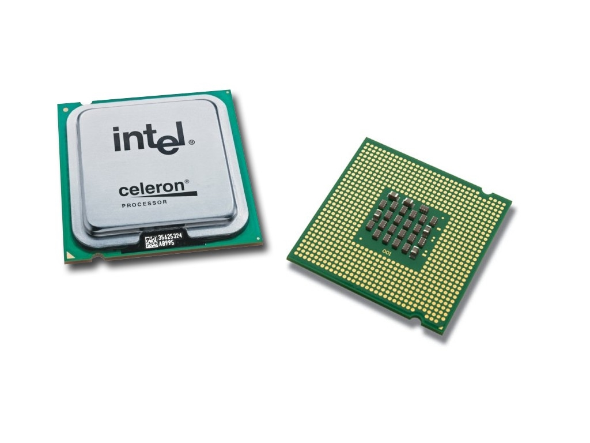
Processor Generasi Kedua Sandy Bridge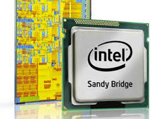
Processor Generasi Ketiga Ivy Bridge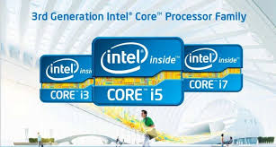
Processor Generasi Keempat Haswell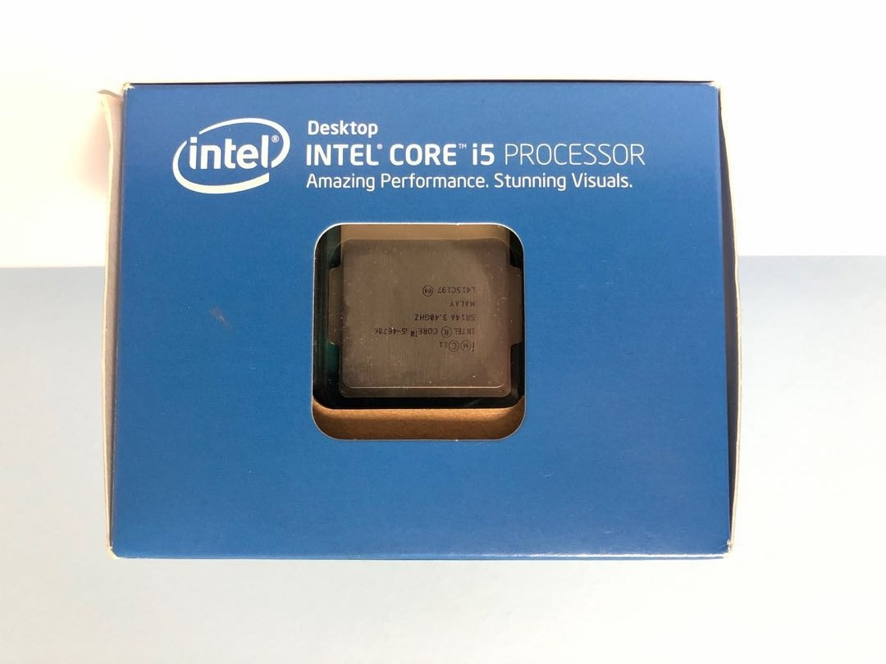
Processor Generasi Kelima Broadwell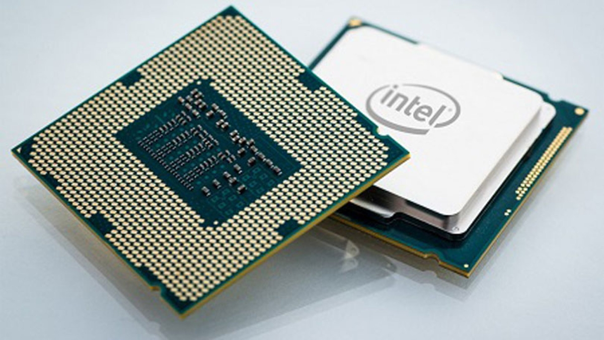
Processor Generasi Keenam Skylake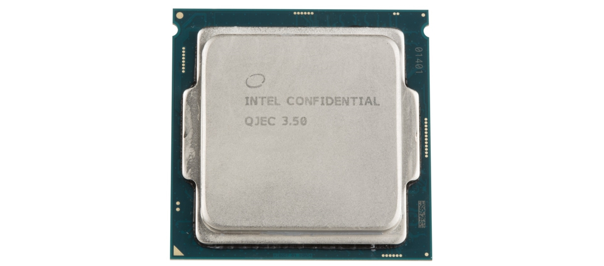
Processor Generasi Ketujuh Kabylake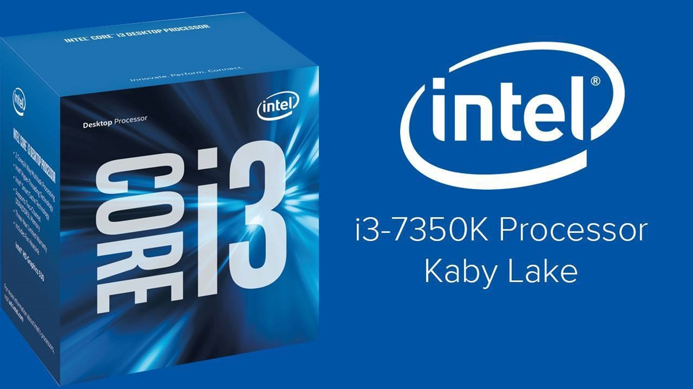
Processor Generasi Delapan Kabylake Refresh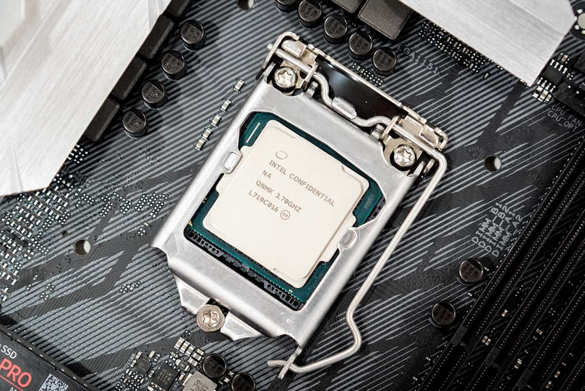
Processor Generasi Sembilan Coffe Lake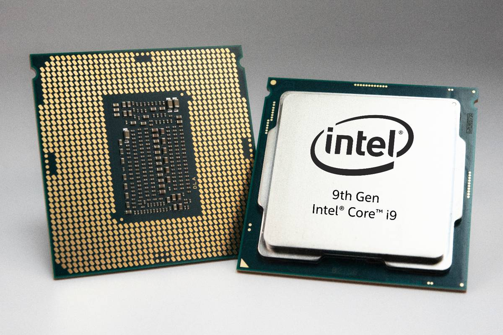
Processor Generasi Sepuluh Canon Lake/Ice Lake 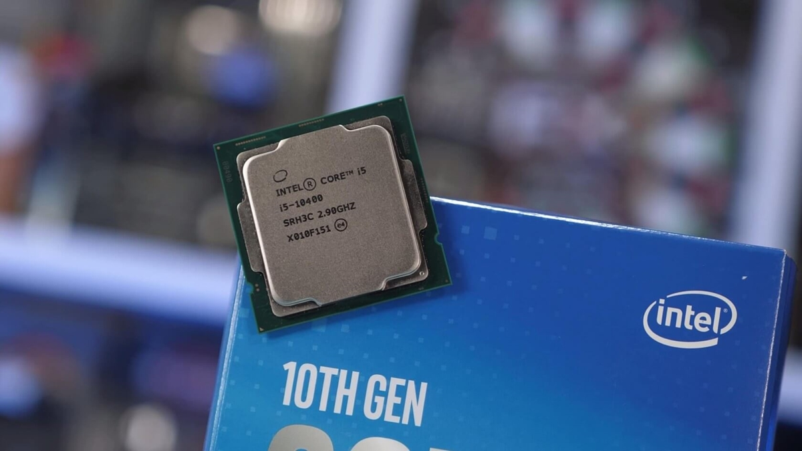
Processor Generasi Sebelas Tiger Lake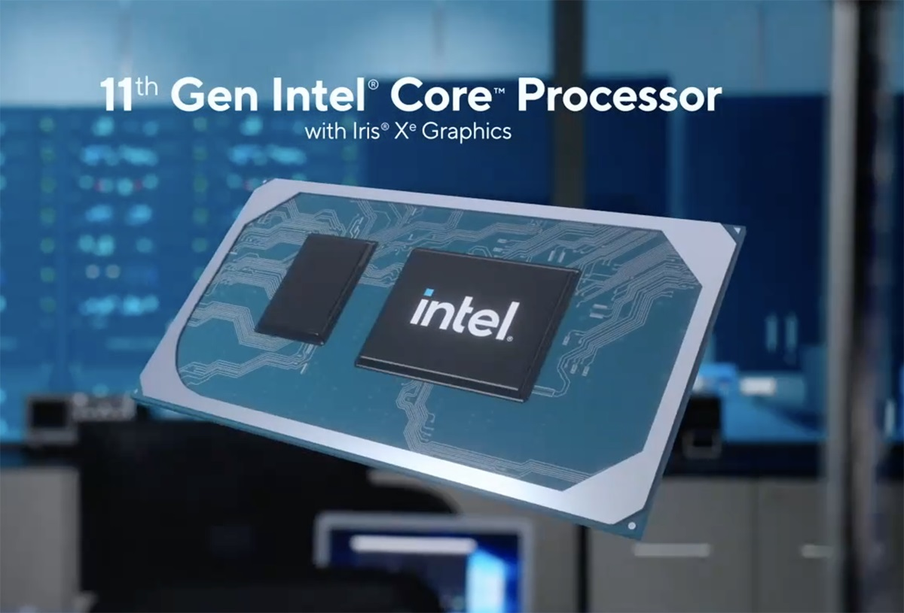